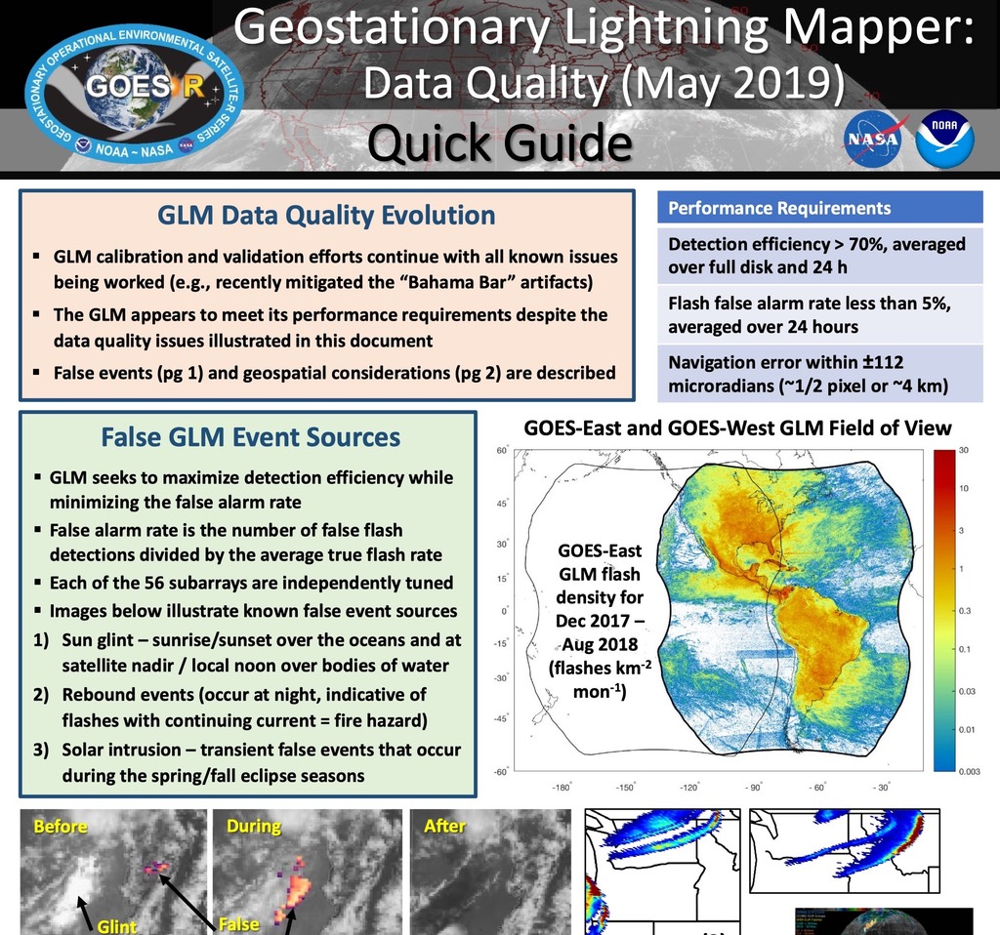
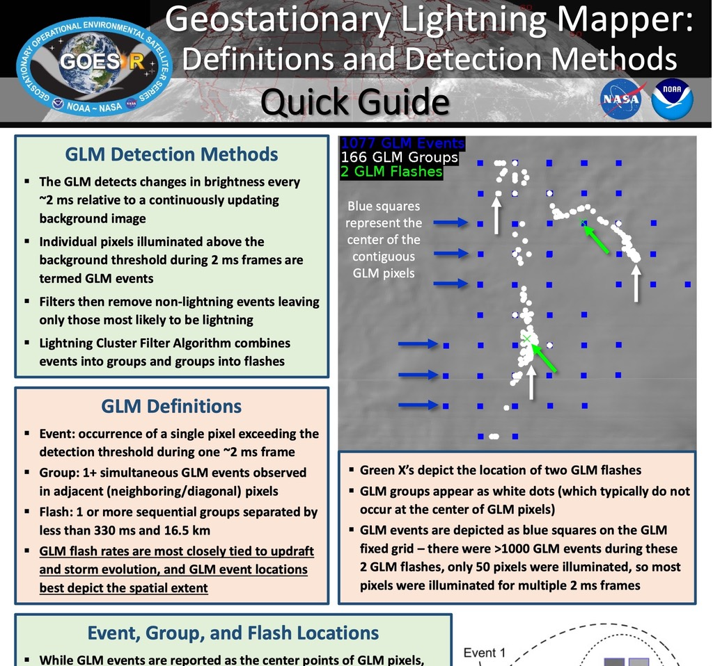
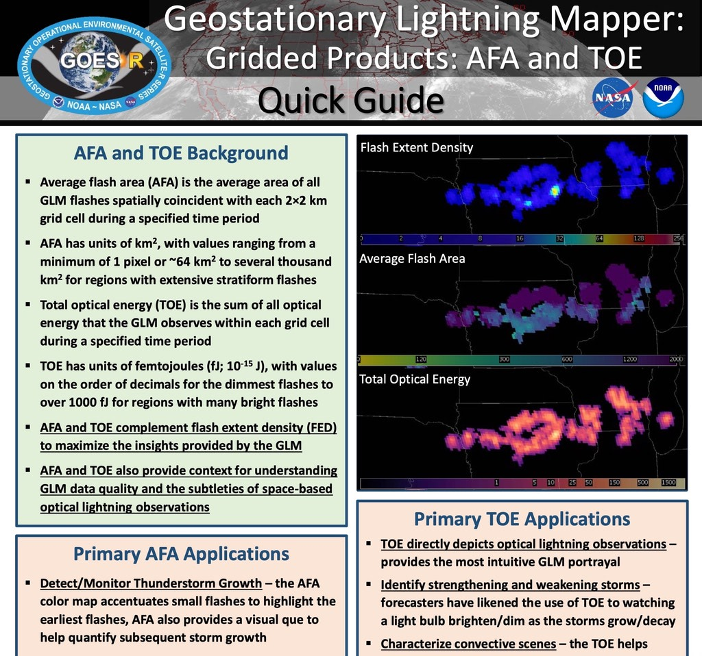
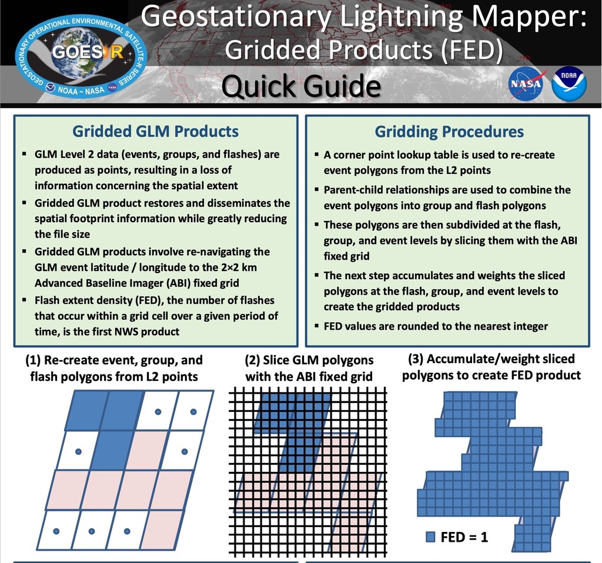
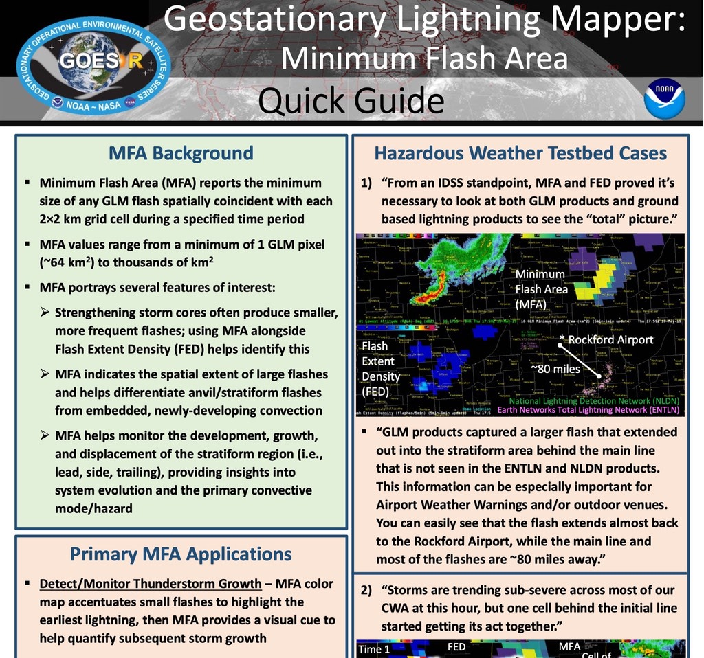
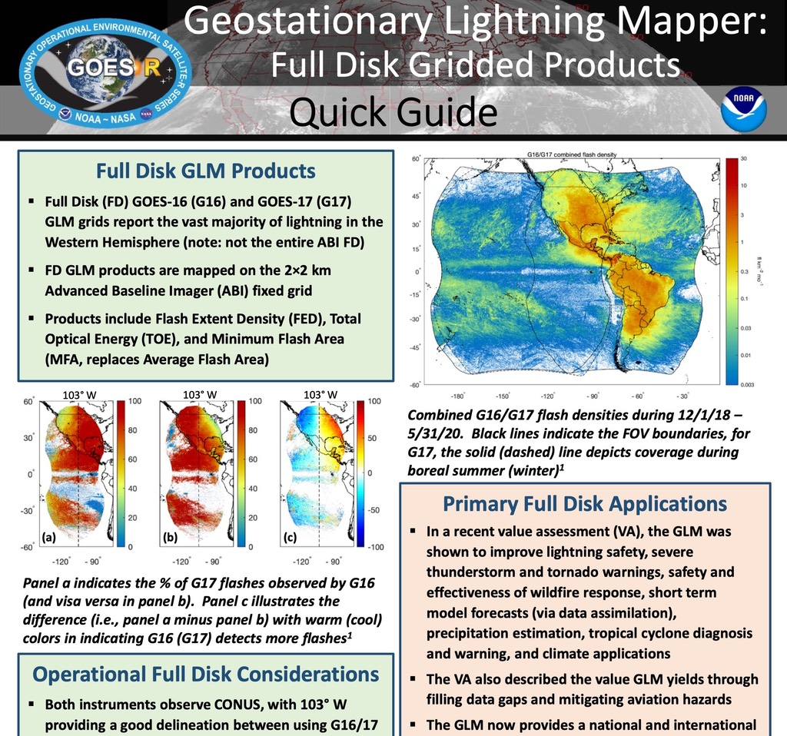

Data Quality 2019 (1 MB PDF)

Definitions and Detection Methods (1 MB PDF)

Gridded Products AFA and TOE (1 MB PDF)

Gridded Products FED (0.5 MB PDF)

Minimum Flash Area (1 MB PDF)

Full Disk Gridded Products (2 MB PDF)